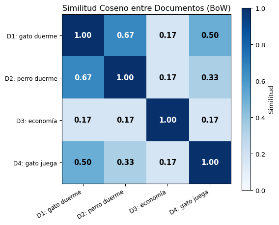

Las máquinas solo entienden números. Los algoritmos de ML requieren entradas numéricas.
Pregunta Clave
¿Cómo convertimos texto en representaciones numéricas que capturen su significado?
Representación Vectorial del Texto
Code
flowchart LR A[📄 Texto<br>crudo] --> B[🧹 Pre-<br>procesamiento] B --> C[🔢 Representación<br>Numérica] C --> D[🤖 Modelo<br>ML/DL] D --> E[📈 Predicción] style A fill:#fff3cd,color:#000 style B fill:#cfe2ff,color:#000 style C fill:#d4edda,color:#000,stroke:#28a745,stroke-width:3px style D fill:#e2d9f3,color:#000 style E fill:#f8d7da,color:#000
flowchart LR
A[📄 Texto<br>crudo] --> B[🧹 Pre-<br>procesamiento]
B --> C[🔢 Representación<br>Numérica]
C --> D[🤖 Modelo<br>ML/DL]
D --> E[📈 Predicción]
style A fill:#fff3cd,color:#000
style B fill:#cfe2ff,color:#000
style C fill:#d4edda,color:#000,stroke:#28a745,stroke-width:3px
style D fill:#e2d9f3,color:#000
style E fill:#f8d7da,color:#000
Hoy aprenderemos las primeras técnicas para el paso Representación Numérica:
Técnica
Nivel
Captura
One-hot Encoding
Palabra
Identidad
Bag of Words
Documento
Frecuencia
Bloque 2: One-hot Encoding
¿Qué es One-hot Encoding?
Representar cada palabra como un vector binario donde una sola posición es 1 y el resto son 0.
Vocabulario:
V = {gato, perro, pez, ave}|V| = 4
Vectores:
Palabra
Vector
gato
[1, 0, 0, 0]
perro
[0, 1, 0, 0]
pez
[0, 0, 1, 0]
ave
[0, 0, 0, 1]
Propiedades:
Dimensión = tamaño del vocabulario \(|V|\)
Exactamente un 1 por vector
Todos los demás son 0
Cada palabra es equidistante de las demás
Implementación Manual
import numpy as np# Definir vocabulariooracion ="el gato come pescado y el perro come carne"palabras = oracion.split()vocabulario =sorted(set(palabras))print(f"Vocabulario ({len(vocabulario)} palabras): {vocabulario}")# Crear mapeo palabra → índicepalabra_a_idx = {palabra: i for i, palabra inenumerate(vocabulario)}print(f"\nMapeo: {palabra_a_idx}")# Crear vectores one-hotprint(f"\nVectores One-hot:")for palabra in vocabulario: vector = np.zeros(len(vocabulario), dtype=int) vector[palabra_a_idx[palabra]] =1print(f" '{palabra:10s}' → {vector}")
Representar un documento como un vector de frecuencias de palabras, ignorando el orden y la gramática.
La Metáfora de la Bolsa 🎒
Code
flowchart LR A["📄 'El gato come<br>y el perro come'"] --> B["🔤 Tokenizar"] B --> C["🎒 Meter en<br>la bolsa"] C --> D["🔢 Contar<br>frecuencias"] D --> E["📊 Vector<br>[2,1,1,2,1]"] style A fill:#fff3cd,color:#000 style B fill:#cfe2ff,color:#000 style C fill:#d1e7dd,color:#000 style D fill:#e2d9f3,color:#000 style E fill:#d4edda,color:#000
flowchart LR
A["📄 'El gato come<br>y el perro come'"] --> B["🔤 Tokenizar"]
B --> C["🎒 Meter en<br>la bolsa"]
C --> D["🔢 Contar<br>frecuencias"]
D --> E["📊 Vector<br>[2,1,1,2,1]"]
style A fill:#fff3cd,color:#000
style B fill:#cfe2ff,color:#000
style C fill:#d1e7dd,color:#000
style D fill:#e2d9f3,color:#000
style E fill:#d4edda,color:#000
Se pierde el orden:
✅ “El gato come pescado” → {el:1, gato:1, come:1, pescado:1}
✅ “Come pescado el gato” → {el:1, gato:1, come:1, pescado:1}
Ambas oraciones tienen la misma representación aunque el orden sea diferente.
Ejemplo Paso a Paso
# Corpus de ejemplodocumentos = ["el gato come pescado","el perro come carne","el gato y el perro juegan"]# Paso 1: Construir vocabulariovocabulario =sorted(set( palabra for doc in documentos for palabra in doc.split()))print(f"Vocabulario ({len(vocabulario)}): {vocabulario}")# Paso 2: Crear vectores BoWprint(f"\nVectores Bag of Words:")print(f"{'Documento':<32}{' '.join(f'{v:>8s}'for v in vocabulario)}")print("-"* (32+9*len(vocabulario)))for doc in documentos: palabras = doc.split() vector = [palabras.count(v) for v in vocabulario]print(f"'{doc:<30s}' {' '.join(f'{c:>8d}'for c in vector)}")
Vocabulario (8): ['carne', 'come', 'el', 'gato', 'juegan', 'perro', 'pescado', 'y']
Vectores Bag of Words:
Documento carne come el gato juegan perro pescado y
--------------------------------------------------------------------------------------------------------
'el gato come pescado ' 0 1 1 1 0 0 1 0
'el perro come carne ' 1 1 1 0 0 1 0 0
'el gato y el perro juegan ' 0 0 2 1 1 1 0 1
Implementación con scikit-learn
from sklearn.feature_extraction.text import CountVectorizerimport pandas as pddocumentos = ["El gato come pescado fresco","El perro come carne roja","El gato y el perro juegan juntos","El pescado es fresco y rojo"]# CountVectorizer crea la representación BoW automáticamentevectorizer = CountVectorizer()X = vectorizer.fit_transform(documentos)# Mostrar como DataFramedf = pd.DataFrame( X.toarray(), columns=vectorizer.get_feature_names_out(), index=[f"Doc {i+1}"for i inrange(len(documentos))])print(df.to_string())
Para comparar documentos de diferente longitud, la similitud coseno es preferible porque normaliza por la magnitud.
Ejemplo: Similitud entre Documentos
from sklearn.feature_extraction.text import CountVectorizerfrom sklearn.metrics.pairwise import cosine_similarityimport numpy as npdocumentos = ["el gato duerme en la alfombra", # Doc 1"el perro duerme en la cama", # Doc 2"la economía del país crece rápido", # Doc 3"el gato juega con la pelota", # Doc 4]vectorizer = CountVectorizer()X = vectorizer.fit_transform(documentos)# Calcular similitud cosenosim_matrix = cosine_similarity(X)print("Matriz de Similitud Coseno:\n")etiquetas = [f"Doc {i+1}"for i inrange(len(documentos))]print(f"{'':8s}", " ".join(f"{e:>6s}"for e in etiquetas))for i, etiqueta inenumerate(etiquetas): fila =" ".join(f"{sim_matrix[i][j]:>6.3f}"for j inrange(len(documentos)))print(f"{etiqueta:8s}{fila}")
import matplotlib.pyplot as pltimport numpy as npfig, ax = plt.subplots(figsize=(6, 5))etiquetas_cortas = ["D1: gato duerme","D2: perro duerme","D3: economía","D4: gato juega"]im = ax.imshow(sim_matrix, cmap='Blues', vmin=0, vmax=1)ax.set_xticks(range(len(etiquetas_cortas)))ax.set_xticklabels(etiquetas_cortas, rotation=30, ha='right', fontsize=9)ax.set_yticks(range(len(etiquetas_cortas)))ax.set_yticklabels(etiquetas_cortas, fontsize=9)ax.set_title('Similitud Coseno entre Documentos (BoW)', fontsize=12)for i inrange(len(documentos)):for j inrange(len(documentos)): color ='white'if sim_matrix[i][j] >0.6else'black' ax.text(j, i, f'{sim_matrix[i][j]:.2f}', ha='center', va='center', fontsize=11, fontweight='bold', color=color)plt.colorbar(im, label='Similitud')plt.tight_layout()plt.show()

Aplicación: Clasificación Simple
from sklearn.feature_extraction.text import CountVectorizerfrom sklearn.naive_bayes import MultinomialNBfrom sklearn.model_selection import cross_val_score# Dataset de ejemplo: clasificar deportes vs. tecnologíatextos = ["el equipo ganó el partido de fútbol","el gol del delantero fue espectacular","el campeonato de tenis terminó ayer","el jugador se lesionó en el entrenamiento","la empresa lanzó un nuevo teléfono","el procesador del computador es rápido","la inteligencia artificial avanza rápido","el software tiene un error crítico",]etiquetas = ["deporte", "deporte", "deporte", "deporte","tecnología", "tecnología", "tecnología", "tecnología"]# Crear representación BoWvectorizer = CountVectorizer()X = vectorizer.fit_transform(textos)# Entrenar clasificador Naive Bayesclf = MultinomialNB()clf.fit(X, etiquetas)# Predecir nuevos textosnuevos = ["el delantero marcó un gol increíble","el nuevo chip es más eficiente"]X_nuevo = vectorizer.transform(nuevos)predicciones = clf.predict(X_nuevo)for texto, pred inzip(nuevos, predicciones):print(f"'{texto}' → {pred}")
'el delantero marcó un gol increíble' → deporte
'el nuevo chip es más eficiente' → tecnología
N-gramas: Más Allá de Palabras Sueltas
BoW pierde el orden. Los N-gramas capturan algo de contexto al considerar secuencias de N palabras consecutivas.
Con bigramas, el vocabulario crece dramáticamente. Para un vocabulario de \(V\) palabras, hay hasta \(V^2\) bigramas posibles.
Parámetros Útiles de CountVectorizer
from sklearn.feature_extraction.text import CountVectorizerdocumentos = ["El procesamiento de lenguaje natural es increíble","El lenguaje natural humano es complejo","La inteligencia artificial procesa el lenguaje","El aprendizaje automático usa datos naturales","Los datos son el combustible de la inteligencia artificial"]# Parámetros avanzadosvectorizer = CountVectorizer( max_features=10, # Solo las 10 palabras más frecuentes min_df=2, # Aparece en al menos 2 documentos max_df=0.9, # Aparece en máximo 90% de documentos ngram_range=(1, 2), # Unigramas y bigramas stop_words=None# Podemos pasar lista custom)X = vectorizer.fit_transform(documentos)print(f"Vocabulario filtrado: {vectorizer.get_feature_names_out().tolist()}")print(f"Forma de la matriz: {X.shape} (documentos × términos)")
Vocabulario filtrado: ['artificial', 'datos', 'de', 'el lenguaje', 'es', 'inteligencia', 'inteligencia artificial', 'la', 'la inteligencia', 'lenguaje']
Forma de la matriz: (5, 10) (documentos × términos)
Tip Práctico
min_df=2 elimina palabras muy raras (posibles errores)
"el perro mordió al hombre""el hombre mordió al perro"
Misma representación BoW, significado opuesto.
2. Alta Dimensionalidad 📏
Vocabularios reales: 50K–500K palabras
Matrices enormes y dispersas
Costoso en memoria y cómputo
3. No Captura Semántica 🧠
"El automóvil es veloz""El carro es rápido"
Similitud BoW = 0, significado idéntico.
4. Tratamiento Igualitario 📊
Todas las palabras tienen el mismo peso. “el” y “revolución” valen lo mismo.
Solución: TF-IDF (Próxima Sesión)
Asignaremos pesos diferentes a cada término según su importancia relativa en el corpus.
One-hot vs. BoW: Comparación
Aspecto
One-hot Encoding
Bag of Words
Nivel
Palabra
Documento
Representa
Identidad
Frecuencia
Dimensión
\(\|V\|\)
\(\|V\|\)
Captura semántica
❌ No
❌ No
Captura frecuencia
❌ No
✅ Sí
Orden
N/A
❌ Perdido
Uso típico
Entrada de redes neuronales
Clasificación, clustering
Mapa de Representaciones de Texto
Code
flowchart TD A["🔢 Representaciones de Texto"] --> B["📊 Dispersas (Sparse)"] A --> C["🧠 Densas (Dense)"] B --> D["One-hot<br>✅ Hoy"] B --> E["Bag of Words<br>✅ Hoy"] B --> F["TF-IDF<br>📅 S2"] C --> G["Word2Vec<br>📅 Semana 4"] C --> H["GloVe<br>📅 Semana 4"] C --> I["Embeddings<br>contextuales<br>📅 Semanas 9-10"] style A fill:#0077b6,color:#fff style D fill:#2a9d8f,color:#fff style E fill:#2a9d8f,color:#fff style F fill:#e9c46a,color:#000 style G fill:#f4a261,color:#000 style H fill:#f4a261,color:#000 style I fill:#e76f51,color:#fff
flowchart TD
A["🔢 Representaciones de Texto"] --> B["📊 Dispersas (Sparse)"]
A --> C["🧠 Densas (Dense)"]
B --> D["One-hot<br>✅ Hoy"]
B --> E["Bag of Words<br>✅ Hoy"]
B --> F["TF-IDF<br>📅 S2"]
C --> G["Word2Vec<br>📅 Semana 4"]
C --> H["GloVe<br>📅 Semana 4"]
C --> I["Embeddings<br>contextuales<br>📅 Semanas 9-10"]
style A fill:#0077b6,color:#fff
style D fill:#2a9d8f,color:#fff
style E fill:#2a9d8f,color:#fff
style F fill:#e9c46a,color:#000
style G fill:#f4a261,color:#000
style H fill:#f4a261,color:#000
style I fill:#e76f51,color:#fff
Ejercicio Práctico
Mini Proyecto: Motor de Búsqueda Simple 🔍
Usando BoW + similitud coseno, creamos un buscador:
Code
from sklearn.feature_extraction.text import CountVectorizerfrom sklearn.metrics.pairwise import cosine_similarity# Corpus de "artículos"corpus = ["La inteligencia artificial está transformando la medicina moderna","Los robots aprenden a cocinar platos gourmet con redes neuronales","El cambio climático afecta los glaciares de Bolivia","Python es el lenguaje más popular para ciencia de datos","Las redes neuronales artificiales imitan el cerebro humano","La deforestación en la Amazonía alcanza niveles récord","El aprendizaje automático mejora el diagnóstico médico",]vectorizer = CountVectorizer()X = vectorizer.fit_transform(corpus)def buscar(consulta, top_n=3):"""Buscar documentos similares a la consulta.""" q_vec = vectorizer.transform([consulta]) similitudes = cosine_similarity(q_vec, X).flatten() indices = similitudes.argsort()[::-1][:top_n]print(f"🔍 Consulta: '{consulta}'\n")for rank, idx inenumerate(indices, 1):if similitudes[idx] >0:print(f" {rank}. (sim={similitudes[idx]:.3f}) {corpus[idx]}")else:print(f" {rank}. (sim=0.000) Sin resultados relevantes")buscar("inteligencia artificial y medicina")print()buscar("medio ambiente y bosques")
🔍 Consulta: 'inteligencia artificial y medicina'
1. (sim=0.548) La inteligencia artificial está transformando la medicina moderna
2. (sim=0.000) Sin resultados relevantes
3. (sim=0.000) Sin resultados relevantes
🔍 Consulta: 'medio ambiente y bosques'
1. (sim=0.000) Sin resultados relevantes
2. (sim=0.000) Sin resultados relevantes
3. (sim=0.000) Sin resultados relevantes